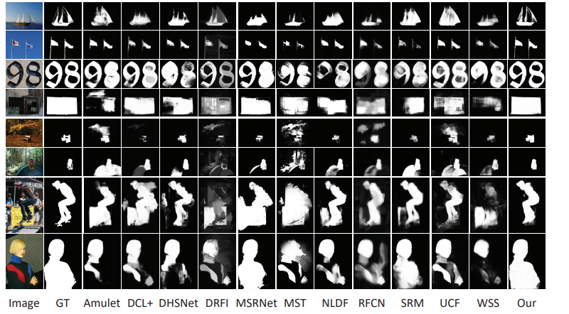
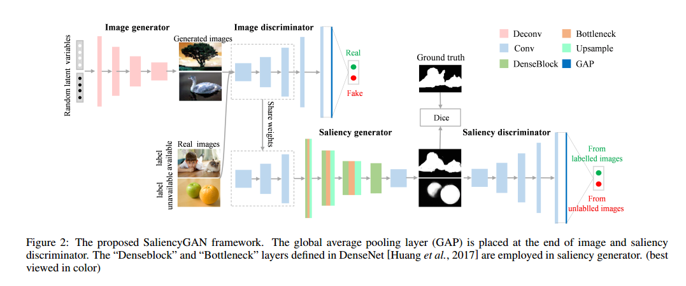
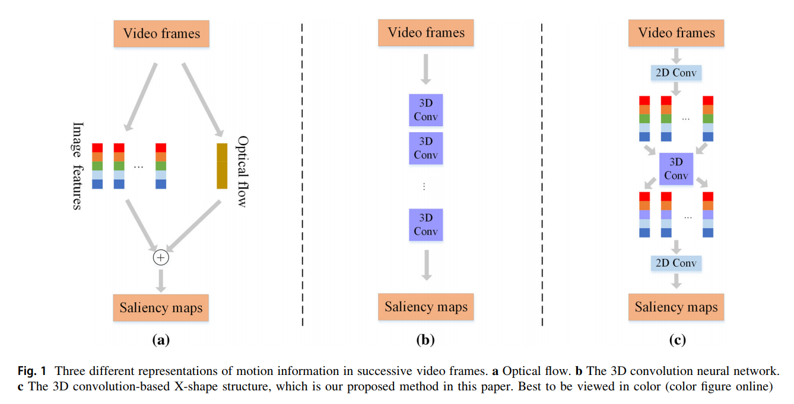
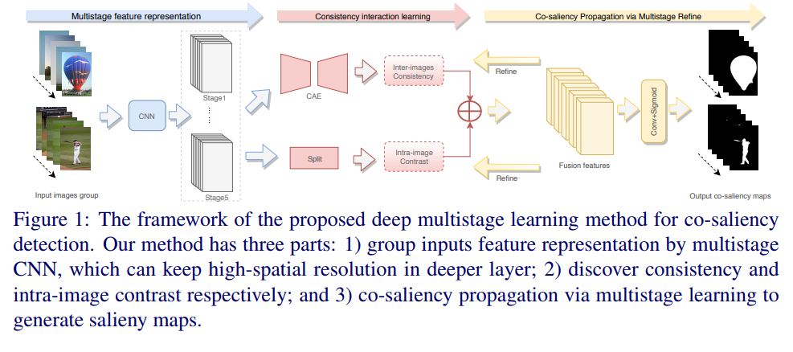
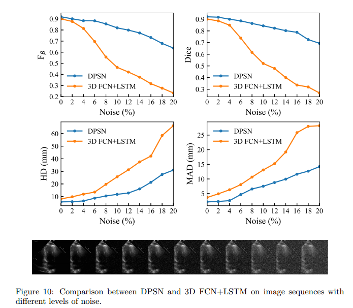
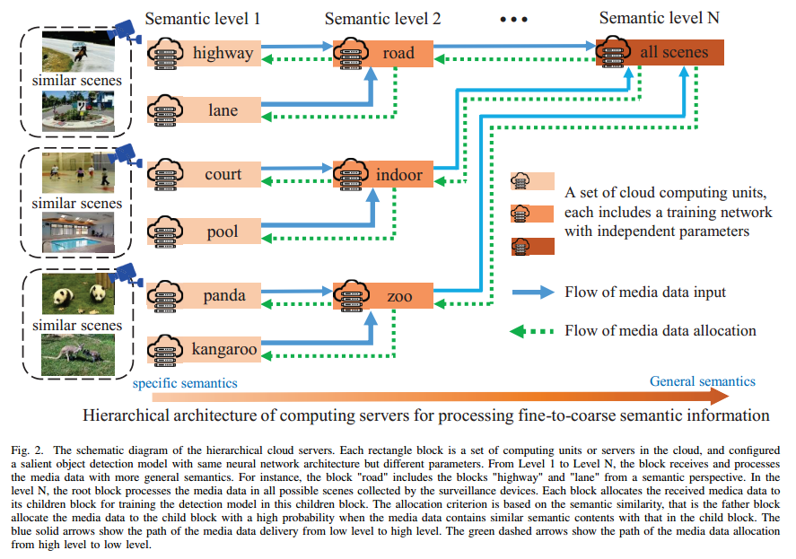
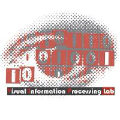
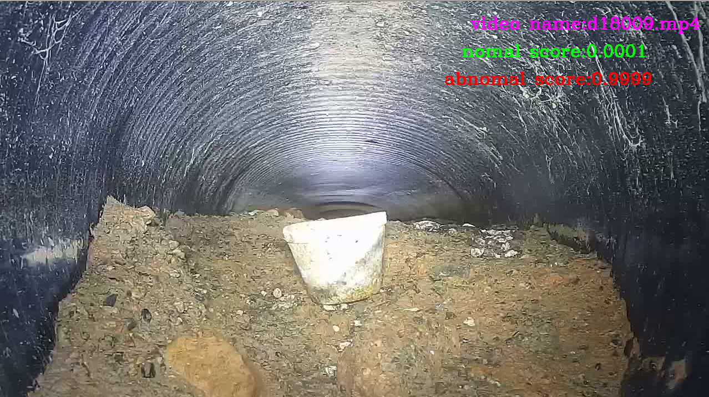

董师周2020年7月毕业于中国科学院大学-深圳先进技术研究院硕士研究生 Phone:18883841206 Email: shizhoudong@126.com CV • Google Scholar • Github• CSDN |
个人经历
- 我是中国科学院大学-深圳先进技术研究院计算机专业的研究生，目前在云从科技工作，工作主要涉及大语言模型人类偏好对齐，大规模场景下的人脸人体时空聚类，超高客流统计相关工作。
- 研究生期间研究方向是基于深度学习的显著性检测，熟悉语义分割，显著性检测，半监督学习相关领域，并跟随深圳先进技术研究院数字所多媒体中心（Siat-MMLab）的乔宇老师和 王亚立老师 做视频分类相关工作。
- 我本科毕业于重庆邮电大学计算机科学与技术专业，从大二开始在陈乔松老师实验室学习图像处理相关知识。
最近消息
- 2024-06-11:我最近在寻找大语言模型优化或计算机视觉算法相关机会，目标地：重庆，成都，欢迎各位HR联系我！
- 2023-10-06: 我们项目组的模型在SuperCLUE4月测试中国内排名第六。
- 2023-10-06:我在知乎专栏中更新了文章： LLM之我见
- 2021-03-28:我在知乎专栏中更新了文章： 用二进制编码代替one-hot编码训练分类器
- 2020-09-07:已入职 云从科技（重庆），并在入职培训中笔试成绩第一名。
- 2020-06-12:我将会在8.31号入职 云从科技（重庆）。
- 2020-06-11:我在知乎专栏中更新了文章： 图像分割的难点在哪里？
- 2019-07-08:我正在找计算机视觉方向的全职研发工作，目标岗位为计算机视觉算法工程师，欢迎各位HR姐姐联系我！
项目经历
论文研究
|  |
Shizhou Dong,Shanhui Sun,Xin Wang, Ming Li,Heye Zhang,Guang Yang,Huafeng Liu,Shuo Li Holistic and deep feature pyramids for saliency detection. BMVC 2018 优点：性能位于行业领先水平，分割边缘准确，不需要预训练。 [PDF] |
|  |
Chengjia Wang*, Shizhou Dong*, Heye Zhang SaliencyGAN: Deep Learning Semi-supervised Salient Object Detection IEEE Transactions on Industrial Informatics(SCI一区，IF:7.377)，被引用超100次 优点：减少 70% 的需要标注的训练数据,用 3K 有标注图像训练性能就能超过弱监督算法，接近 10K 图像训练的行业领先水平全监督方法。 [PDF] * 共同一作 |
|  |
Shizhou Dong,Zhifan Gao,Sandeep Pirbhulal,Gui-Bin Bian,Heye Zhang, Wanqing Wu,Shuo Li 3D convolution for video salient object detection Neural Computing and Applications（IF：4.67） 优点：简单有效的运动信息建模方式。 [PDF] |
|  |
Min Li, Shizhou Dong, Kun Zhang, Zhifan Gao, Xi Wu, Heye Zhang, Guang Yang, Shuo Li Deep Learning intra-image and inter-images features for Co-saliency detection BMVC 2018 优点：通过自编码器对多张图像中相似的内容进行建模。 [PDF] |
|  |
Ming Li, Shizhou Dong, Zhifan Gao, Alex Pui-wai Lee, Cheng Feng, Huahua Xiong, Wei Zheng, Dhanjoo Ghista, Heye Zhang,Victor Hug C. de Albuquerque Unified model based on deep feature pyramid and deep supervision for multi-view echocardiographic sequences interpretation Applied Soft Computing（SCI 一区，IF：4.87） 优点：精准，鲁棒的超声心电图的自动分割。 |
|  |
Zhifan Gao, Heye Zhang,Shizhou Dong, Shanhui Sun, Xin Wang, Guang Yang, Wanqing Wu, Shuo Li, and Victor Hugo C. de Albuquerque Salient Object Detection in the Distributed Cloud-Edge Intelligent Network IEEE Network（SCI一区，IF：7.50） 优点：不同语义层级的分布式显著性检测框架。 |
个人竞赛
|  |
SALICON Saliency Prediction Challenge (LSUN 2017) 个人竞赛 ->https://competitions.codalab.org/competitions/17136##results 优点 |
学习项目
|  |
城市排水管道视频异常检测 公司合作项目 合作公司：博铭维 指导老师：乔宇，王亚立 优点 |
 |
复杂环境下的车牌定位 重庆绿色智能研究院实习项目 指导老师：覃勋辉 优点：对图像划分亮暗区域，解决逆光情况下车牌难定位的问题。 算法详述 Code |
Others
- 编程: Pytorch,Python, C， C++， SQL， MATLAB
- 获奖：中国科学院大学：三好学生，所长奖学金。重庆邮电大学：优秀学生奖学金，优秀班干部，操作系统单科第一名。
- 英语：英语六级。